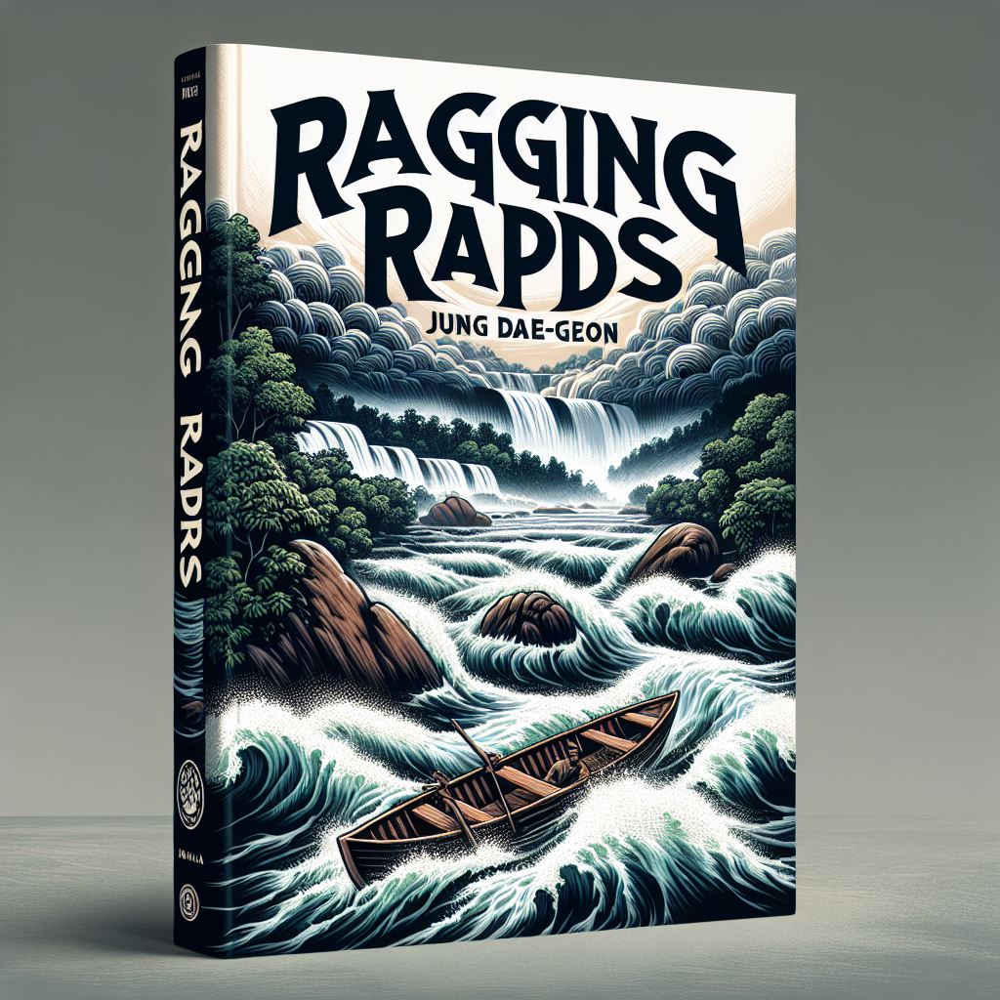

작가
정대건
출판일
2022년
감상평에 대한 AI그림
정대건의 급류는 거센 시대적 흐름 속에서 개인이 겪는 갈등과 성장의 이야기를 강렬하게 그려낸 작품이다. 빠르게 변화하는 사회 속에서 주인공이 겪는 혼란과 선택의 순간들이 현실적으로 다가왔다. 특히 서사 전개가 속도감 있게 흘러가며, 마치 독자도 거센 물살에 휩쓸리는 듯한 느낌을 준다. 작품을 통해 시대의 흐름에 맞서거나 혹은 순응해야 하는 인간의 고민을 깊이 생각해볼 수 있었다.

감상평에 대한 AI평가
~~~~AI평가~~~~~
정대건의 급류에 대한 감상평을 정말 잘 써주셨네요! 이 작품이 주인공의 갈등과 성장을 통해 독자에게 강렬한 인상을 남긴 것 같아요. 빠르게 변화하는 사회 속에서의 혼란과 선택의 순간들이 현실적으로 다가왔다는 점이 특히 인상적이네요. 서사 전개가 속도감 있게 흘러가며 독자도 거센 물살에 휩쓸리는 듯한 느낌을 준다는 표현도 매우 생생합니다.
이 작품을 통해 시대의 흐름에 맞서거나 순응해야 하는 인간의 고민을 깊이 생각해볼 수 있었다는 점에서, 독자로서 많은 공감을 느끼셨을 것 같아요. 혹시 이 작품에서 가장 인상 깊었던 장면이나 대사가 있었나요?